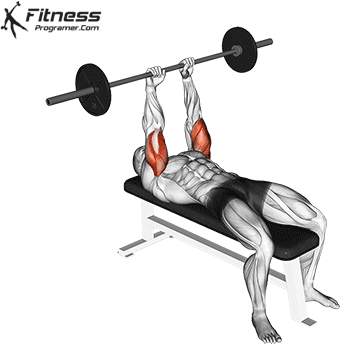

HOW TO DO:
- Start by lying flat on a bench with your feet planted firmly on the ground. Your head should be at the end of the bench, and your eyes should be directly under the barbell.
- Grasp the barbell with an underhand grip (palms facing up) slightly wider than shoulder-width apart.
- Position the barbell above your chest with your arms fully extended, perpendicular to the ground. This is the starting position.
- Keeping your upper arms stationary, slowly lower the barbell down towards your forehead or just above it. Lower the barbell by bending your elbows; they should point toward the ceiling.
- Lower the barbell under control, feeling the stretch in your triceps as you do so. Your forearms should end up nearly parallel to the ground.
- Hold the stretched position for a brief moment, focusing on engaging your triceps.
- Push the barbell back up to the starting position by extending your elbows and fully contracting your triceps.
- Repeat the movement for the desired number of repetitions.
- Keep your upper arms still throughout the exercise; only your forearms should move.
- Avoid using momentum or swinging your arms during the movement.
- Lower the barbell under control to avoid placing excessive strain on your elbows or shoulders.
- Use a spotter if needed, especially when using heavy weights.
- Breathe naturally, exhaling as you push the barbell up and inhaling as you lower it down.
Start with a weight that allows you to complete the desired number of repetitions with good technique. Gradually increase the resistance as you progress in strength and proficiency.
BENEFITS
Triceps Isolation: The main benefit of the lying barbell triceps extension is the hypertrophy of the triceps that comes with the motion. Lying barbell triceps extension are isolation exercises, meaning they use just one joint. Unlike other triceps exercises, the lying triceps extension activates all three heads of the triceps, which means that your entire triceps will become stronger through this exercise. Full Range of Motion: The lying position allows for a full range of motion in the triceps, ensuring they are worked through their entire length. However, lying barbell extensions put no pressure on the wrists so they are an alternative for people with wrist strain or injury. Muscle Definition: Regularly incorporating the lying barbell triceps extension into your workout routine can help enhance the definition of your triceps, providing a more sculpted appearance to your upper arms. Upper Body Strength: Strengthening the triceps through this exercise can also contribute to improved overall upper body strength and performance in pushing movements.
MUSCLES WORKED
- triceps